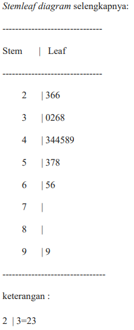

Diagram batang daun atau yang dikenal dengan istilah 'stem-leaf diagram'
ditemukan oleh John Tukey. Stem-leaf diagram digunakan untuk menggambarkan
/menyajikan data dengan cara memisahkan setiap nilai menjadi dua bagian:
bagian batang (stem) yaitu digit angka paling kiri dan diikuti dengan angka
berikutnya, yaitu daun (leaf) digit angka paling kanan.
Tujuan Stem-leaf diagram adalah untuk mengetahui beberapa hal berikut ini:
Apakah pola pengamatan simetris
Penyebaran atau variasi dari data pengamatan
Apakah terdapat pencilan (outlier, nilai-nilai yang berada jauh dari yang lainnya)
Titik pemusatan data
Ada lokasi yang merupakan gap (kesenjangan dalam data)
Kelebihan dari diagram batang-daun:
Menunjukkan data asli
Mengelompokkan ke dalam sebarang kategori
Mempertahankan informasi dalam data
Mudah dibuat dan dibaca
Bisa digunakan untuk menentukan range dan median (harus dalam daun
yang terurut)
Dapat digunakan untuk mengurutkan data, pola/bentuk distribusi data
(simetris, menceng kanan, mencemg kiri)
Membandingkan distribusi 2 atau lebih kelompok
Kelemahan:
Sulit untuk jumlah data yang banyak/besar dan rangenya besar.
Selain yang disebutkan di atas, juga terdapat distribusi data yang memiliki pola
tidak beraturan.
Cara membuat diagram batang daun secara umum:
Data diurutkan terlebih dahulu (dalam urutan naik/turun).
Tentukan batangnya, pastikan batang mencakup seluruh nilai.
Catat setiap nilai data dengan menuliskan daun bersebelahan dengan batang
yang bersesuaian.
Hitung jumlah daun, harus sesuai dengan banyak data
Pisahkan stem dan leaf dengan tanda '|'
Beri keterangan stem dan leaf pada akhir diagram
Buatlah interpretasi dengan melihat bentuk diagram
Catatan : Batang bernilai lebih besar daripada daun.
Kebanyakan data itu menceng ke kanan atau menjurai ke bawah yang
artinya cenderung banyak data yang bernilai kecil.
Contoh diagram batang dan daun
Buatlah stemleaf diagram untuk data berikut ini:
23 58 43 32 26 44 49 30 99 38 57 36 65 45 48 66 53 44 26
Jawab :
Misal untuk tiga angka pertama, 23 26 dan 26. Angka puluhannya sama,
yaitu 2 sehingga angka tersebut ditempatkan pada stem (batang) yang
sama, begitupula angka satuannya 3, 6, 6 ditempatkan pada leaf yang sama
sehingga membentuk leaf 366.Apabila kita masukkan ke dalam bentuk Stemleaf diagram :

Interpretasi:
Tidak simetris, data miring (menjulur) ke arah kanan
Angka 99 merupakan outlier
Gap (kekosongan/kesenjangan data) terdapat pada stem: 7 dan 8
Pemusatan data terjadi pada stem 4, sekitar 4 puluhan